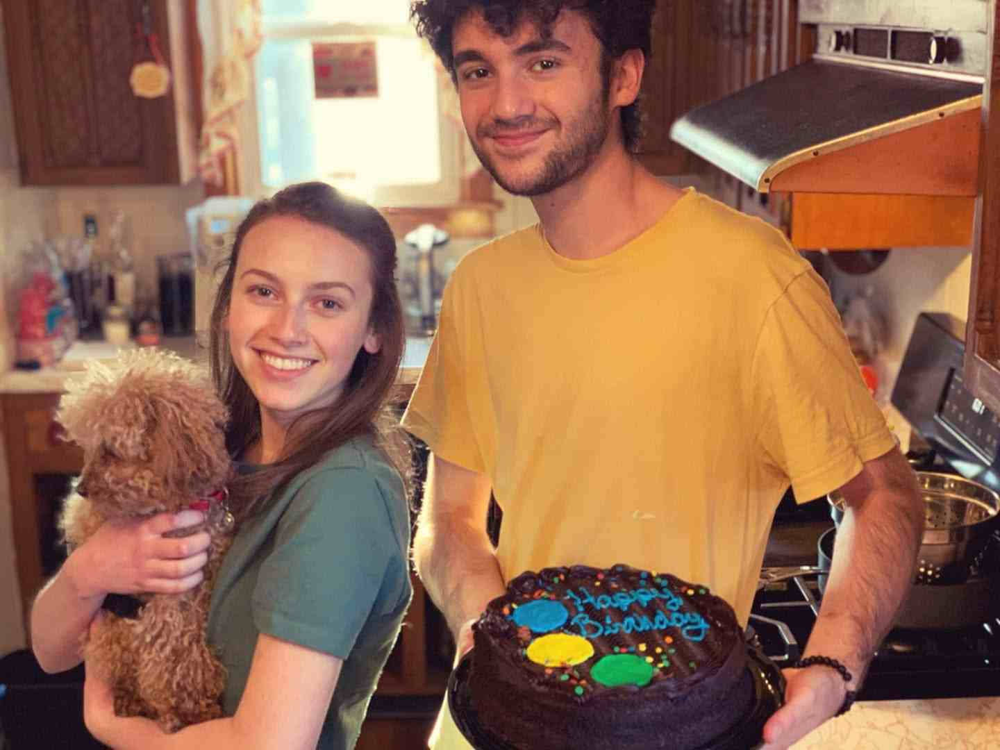

For lab 4, I'd like to explain why I'm interested in web design!

Here is a picture of my older sister, Audrey, and I from my birthday last year.
Here are just a few reasons why I'm interested in web design.
Ever since I was in junior high, I've always liked problem solving. Whether it was figuring out
the circumference of a circle, or just helping my parents fix whatever was wrong with their phones. I specifically
liked geometry and algebra in high school, where we had many different formulas to solve an array of problems,
with the tough part being to find the correct formula and to know when to use it.
Now that I've started coding, I find a lot of similarities to those math classes. Especially in web design,
it's important to know elements and when I want to use them, and the best part is that there's no exact correct answer.
I can problem solve for hours on how I want my website to look, and I get to be the one who ultimately says when it is done.
To me, websites are like big math problems that can be answered however I see fit, and I love that!
There are also a few more things about web developing that heightened my interest.
Here's a link to the U.S. Bureau of Labor Statistics. It shows statistics like job growth, average salary, typical
education levels for the job, and more. As you can see, web developers are growing in demand every year, which is great for people like
me who want a job right out of college.
Although this doesn't solidify my choice to become a web developer, it definitely helps me feel more confident that I will find a job
once I get through school.
I also like the work schedules that are available for developers. Whether I want to work in an office for a company or freelance
from home, there's a few roads I can take, and I like that flexibility. Here's another link to an article that breaks down a web developer's regular day.
That's all for lab 4! See the links below for my other labs!